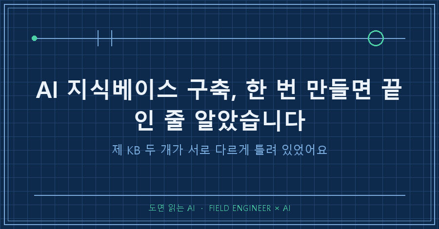
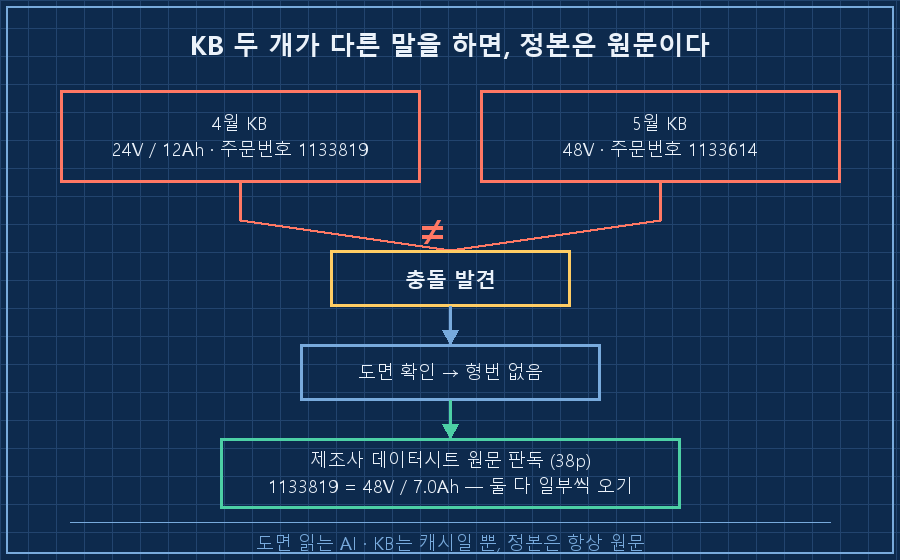
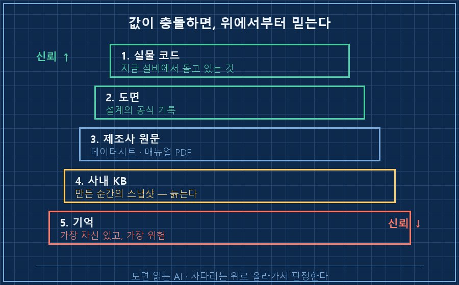

사내 문서를 AI한테 학습시키는 AI 지식베이스 구축, 요즘 관심 많으시죠?
한번 잘 만들어두면 AI가 알아서 정확하게 일해주겠지, 다들 그렇게 생각하잖아요.
저도 그런 줄 알았거든요.
근데 얼마 전, 제가 직접 만든 지식베이스 두 개가 같은 부품을 두고 서로 다르게 틀려 있는 걸 발견했습니다.
지난 글에서 매일 "성공"이라고 보고하면서 실제로는 헛돌던 자동화 이야기를 했는데요.
오늘은 그 검증 시리즈 마지막 편이에요.
이번엔 AI도 자동화도 아니고, 제가 AI한테 먹인 데이터가 범인이었던 사건입니다.

저는 15년차 제어 엔지니어예요.
수소 설비 제어판넬 설계하고, PLC 코드 짜고, 현장 가서 결선 확인하는 게 일이에요.
그리고 지난 1년 동안 매뉴얼, 도면, 산정서 같은 자료를 지식 문서 500여 개로 정리해서 AI한테 쌓아왔어요.
이걸 지식베이스, 줄여서 KB라고 부르는데요.
AI가 이 KB를 검색해서 제 사양서 초안까지 만들어줍니다.
1. 발단은 UPS 용량 계산이었어요
수소 설비는 정전이 나도 제어시스템이 한동안 살아 있어야 해요.
밸브를 안전한 위치로 보내고, 데이터도 기록해야 하거든요.
그 비상 전원을 담당하는 장치가 UPS(무정전 전원장치)예요.
마침 UPS 사양서랑 정전보상시간 계산서를 만들 일이 생겨서 AI한테 시켰어요.
AI는 바로 쓰지 않고 KB부터 뒤졌습니다.
두 달 전에 만든 소형 설비용 UPS 산정서,
제조사 매뉴얼을 학습시킨 기기 KB,
전장도면까지.
여기까지는 계획대로였죠.
2. 근데 KB 두 개가 서로 다른 말을 하더라고요
배터리 형번을 교차검증하는데 충돌이 났어요.
두 KB에 적힌 값이 이랬습니다.
[4월 KB] 배터리: QUINT-BAT/24DC/12AH · 주문번호 1133819 · 24V / 12Ah
[5월 KB] 배터리: QUINT-HP-BAT/PB/48DC/7.0AH · 주문번호 1133614 · 48V같은 UPS의 배터리인데 전압이 24V와 48V로 갈려요.
백업시간 계산의 분모가 되는 에너지가 두 배 차이 납니다.
어느 쪽을 믿어도 계산서 전체가 흔들리는 상황..
도면도 뒤져봤는데 배터리 형번까지는 안 적혀 있더라고요.
사내 자료만으로는 판정이 안 됐어요.
3. 정본은 항상 원문이더라고요
결국 제조사(피닉스컨택트) 공식 데이터시트, 38페이지짜리 PDF를 웹에서 받아서 직접 판독했어요.
정답은 이랬습니다.
[데이터시트 원문] 주문번호 1133819 = QUINT-HP-BAT/PB/48DC/7.0AH/PT · 48V / 7.0Ah
→ 4월 KB: 주문번호만 맞음 (모델명·전압·용량 전부 오기)
→ 5월 KB: 모델명만 맞음 (주문번호 오기)두 KB가 서로 다른 부분을 틀리게 기록하고 있던 거예요.
덤으로 하나 더 나왔어요.
4월 KB의 UPS 출력 "1.05kW(역률 0.7)"도 오기였고, 원문은 1,350W(역률 0.9)였어요.

여기서 소름 돋았던 게 뭐냐면요.
어느 KB 하나만 봤으면 그 오류가 그대로 사양서에 실렸을 거라는 점이에요.
두 개를 비교하지 않았으면 충돌 자체를 몰랐을 거고요.
KB 이중화가 비용인 줄 알았는데, 사실은 오류 검출기였던 거죠.
여러분도 사내 지식베이스, 한 벌만 믿고 계시지 않나요?
4. 고치면서 지킨 게 세 가지 있어요
첫째, 틀린 KB를 고치되 "무엇이 왜 틀렸었는지" 정정 이력을 KB 안에 같이 남겼어요.
조용히 고치면 다음에 같은 함정에 또 빠지거든요.
오답 노트가 정답보다 가치 있을 때가 있어요.
둘째, 이미 발행된 산정서는 임의로 안 고치고 결정 대기로 올려뒀어요.
셋째, 실측 못 한 부하값은 계산서에 "미검증"이라고 표기하고 시운전 때 확인하는 계획을 붙였어요.
최종 계산은 배터리 3뱅크 1,008Wh에 고율방전 보정을 걸어서 백업 41분.
요구치 30분보다 여유 있게 나왔습니다!
재밌는 건, 오류를 정정하니 뱅크당 에너지가 263Wh에서 336Wh로 오히려 커졌다는 거예요.
오류가 보수적인 방향으로 나서 다행이었지, 반대였으면 부족한 UPS를 "적합"이라고 써낼 뻔했어요.
이번엔 운이 좋았을 뿐이에요..
5. 그래서 믿는 순서를 정해뒀습니다
KB는 만든 순간의 스냅샷이에요.
만들 때의 실수를 영구 보존하고요.
시간이 지나면 "AI가 자신 있게 말하는 틀린 값"이 됩니다.
그래서 제 원칙은 이래요.
값이 충돌하면 실물 코드 > 도면 > 제조사 원문 > 사내 KB > 기억 순으로 올라가서 판정한다.
KB는 캐시일 뿐, 정본은 항상 원문이다.
그리고 정정할 땐 이력까지 남긴다.

"KB에 있으니 맞겠지"는 "내 기억에 있으니 맞겠지"랑 같은 급의 위험이더라고요..
정리하면, AI 지식베이스는 구축이 끝이 아니라 관리의 시작이에요.
검증 시리즈 세 편을 관통하는 결론은 하나입니다.
AI의 말도, 자동화의 성공 로그도, 내가 만든 KB도 — 원문과 대조하기 전까지는 전부 "주장"일 뿐이라는 거요.
혹시 여러분 회사 지식베이스에는 오답 노트가 있나요?
다음 글에선 같은 AI를 쓰는데 사람마다 결과가 몇 배씩 갈리는 이유, 모델이 아니라 그 주변 구조 이야기를 써볼게요.
---
현장 엔지니어를 위한 AI 도입·교육 문의: makefield.ai